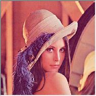
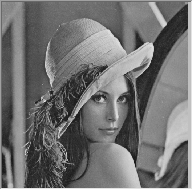
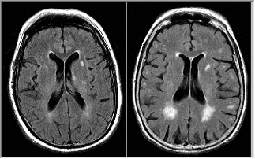
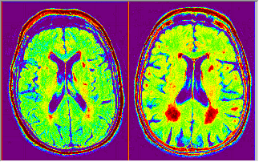

- ミニツールバーの
 をクリックします。
をクリックします。
画像変換には、通常、カラー画像をグレーまたはバイナリ画像に変換すること、RGBカラーチャネルを分割・統合すること、および画像パレットを使用してグレー画像に疑似色を適用することが含まれます。
カラー画像の強度だけが重要な場合は、カラー画像をグレースケールに変換して、計算の複雑さを軽減すると便利です。さらに、モノクロプリンタやモノクロディスプレイなどの一部の入力/出力デバイスは、グレースケール画像しか処理できません。この場合、色をグレースケールに変換する必要があります。
カラー画像をグレースケールに変換するには、
| 元の画像 | グレースケールの画像 |
|---|---|
|  |  |
グレースケールの画像は、パレットによるカラーマップが可能です。疑似的な色は、元の画像に追加情報を追加しません。しかし、一部の詳細を人間の目に見やすくすることに役立ちます。衛星画像や磁気共鳴画像法などのセンサー画像を表示するために一般的に使用されます。
| 元の画像 | パレットを適用した画像 |
|---|---|
|  |  |
カラーパレットをグレースケールの画像にマッピングするには、
または
cvPalette -d;
コマンドウィンドウ（ウィンドウ：コマンドウィンドウまたはShiftキー+ALT+3）で実行し、cvPaletteダイアログを開きます。|
ミニツールバーのパレット反転ボタン |
カラーイメージは、赤,緑,青のカラーチャンネルに分割することができます。次に、各チャネルを個別に処理し、それらを新しいカラー画像に再結合できます。この機能は、処理するオブジェクトが1つのチャネルにのみ配置されている、もしくは1つのチャネルから簡単に抽出される場合に特に役立ちます。
カラーイメージをR,G, Bチャンネルに分割する
RGBチャンネルを統合してカラーイメージを再構成するには
| Note：画像は、ここで指定したチャネルの順序で分割/結合されます。順序が異なると、結果も異なります。 |